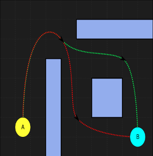

HTML Based Mol File Reader
A web application built using html5, Javascript, Bootstrap and the Kekule JS libraries. The
site allows for users to view mol files in various modes and even restructure and save their
own mol files. Users have the ability to view the molecular structures in 2D and gather data
on them. They can also modify any part of the structure, view data on any individual part,
and even view full 3D representations of the structures.
Flask Based Issue Tracker
 A web application built using Python, Javascript, bootstrap and SQL databases. The site
allows for users to track work on certain projects and open or close issues on those
projects. Users have profile pages and can upload images to them, which are tracked and
resized for space on the server with the pyhton lib pillows. All data entries are saved
and searchable through the site’s link to a SQL database. Passwords can be reset via email.
A web application built using Python, Javascript, bootstrap and SQL databases. The site
allows for users to track work on certain projects and open or close issues on those
projects. Users have profile pages and can upload images to them, which are tracked and
resized for space on the server with the pyhton lib pillows. All data entries are saved
and searchable through the site’s link to a SQL database. Passwords can be reset via email.
React Based Pathfinding Visualizer

A React web application built using Javascript, Node js and bootstrap css style sheets. The site
allows for users to visualize a demo of Dijkstra's path finding algorithm. The demo
suports building walls and moving the end node to different locations. It also contains links to more info on building
sites with React, other forms of pathfinding algoritihims and Dijkstra's orginal one. The App is hosted
by Git hub pages using a NPM GH extention.
Django Based Web Blog
A web application built using Python, Javascript, and Bootstrap using the Django web
framework. The site allows for users to post blog style info on topics they wish to discuss
once they are registered. Users have profile pages and can upload images to them, which
are tracked and resized for space on the server with the python lib pillows. All data
entries are saved, and clicking on a user’s name will show all of their posts.
Power to The Profile
A Python-based CI challenge and AI dev education site built with HTML, CSS, and JavaScript. The project
focuses on simplifying data profiling in AI/ML pipelines by allowing users to explore how structured data
can be automatically analyzed and summarized. It includes examples of Pandas Profiling and integrations
.The site also links to learning resources on dataset validation, profile automation, and open-source tools
that support data transparency in AI development workflows.
Power to The LLM
A data mapping educational project website built with HTML, CSS, and JavaScript, aimed at simplifying the integration
of large language models (LLMs) into AI/ML workflows. The site showcases how input/output data can be
structured for more effective use with models like GPT and other transformer-based tools.
It includes visual guides, example prompts, and code that demonstrate LLM setup and interaction.
The project also links on model fine-tuning.